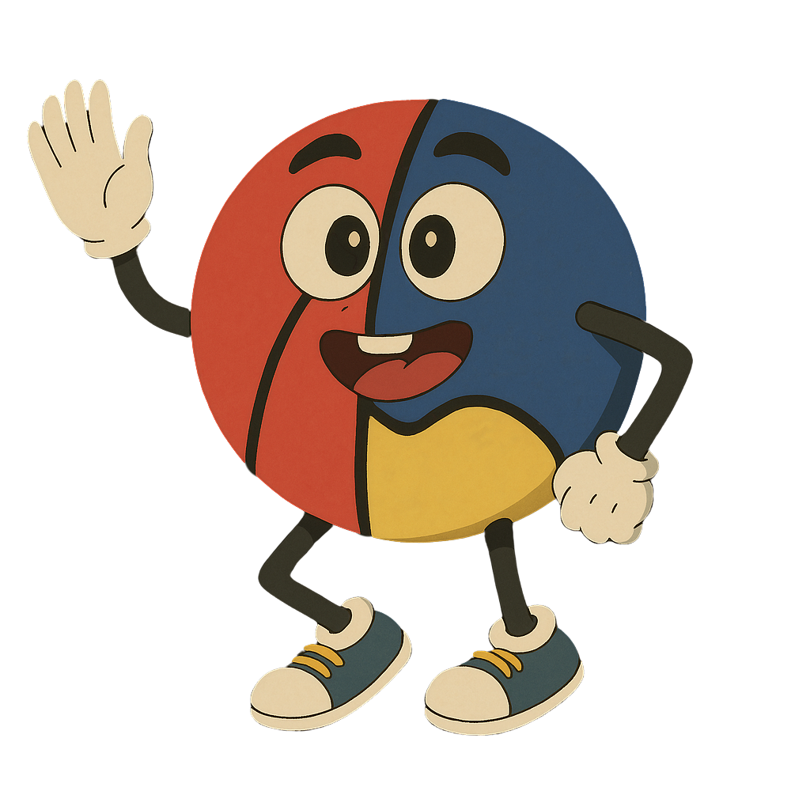

Plataforma de Inteligencia Artificial
Descubre cómo la IA puede ayudarte en el aula. Elige tu etapa y aprende a crear recursos increíbles, paso a paso 💛
Selecciona tu itinerario para comenzar 👇

Descubre cómo la IA puede ayudarte en el aula. Elige tu etapa y aprende a crear recursos increíbles, paso a paso 💛
Selecciona tu itinerario para comenzar 👇
No hace falta escribir mucho. Solo hay que incluir 4 ingredientes. Piensa en ellos como si rellenases una ficha:
Mira cómo cambia el resultado con solo añadir unos detalles:
«Dibuja un oso»
«Genera una imagen de un oso de peluche marrón sentado en una nube, estilo ilustración infantil con colores pastel, fondo de cielo rosa suave con estrellas pequeñas»
«Haz una canción de los números»
«Canción infantil en español, alegre y pegadiza, estilo pop acústico con guitarra, voz femenina suave, que enseñe los números del 1 al 10 con ejemplos divertidos (1 nariz, 2 ojitos…), duración 1 minuto»
«Cuento de un perro»
«Crea un cuento ilustrado de 5 páginas para niños de 4 años sobre un perrito llamado Canela que tiene miedo del primer día de cole, pero descubre que hacer amigos es maravilloso. Estilo acuarela tierna, colores cálidos. Moraleja: lo desconocido puede ser bonito»
Estas palabras clave son como ingredientes de cocina: cuantas más combines, más rico el resultado. Copia las que necesites y añádelas a tus prompts:
Puedes subir una foto o un dibujo y pedirle a la IA que trabaje a partir de ella. Es como enseñarle algo a un compañero en vez de solo explicárselo con palabras.
💡 Truco pro: Combina imagen + texto para instrucciones mucho más precisas. Por ejemplo, sube una foto de tu aula y pide: «A partir de esta foto, dibújame este mismo espacio decorado para un proyecto sobre el otoño, con hojas en las paredes y una mesa sensorial». ¡La IA «ve» la imagen y trabaja sobre ella!
No hace falta empezar de cero. Dile a la IA qué cambiar: «hazlo más colorido», «cambia la voz a masculina», «que el final sea más divertido». La IA recuerda la conversación.
Si un compañero/a ha escrito un buen prompt, cópialo y cámbialo a tu gusto. No hay que reinventar la rueda. Los ejemplos de este taller son tuyos para modificar.
No hace falta escribir un párrafo enorme. Con 2-3 frases bien pensadas basta: qué quiero + cómo lo quiero + para quién. Calidad, no cantidad.
No puedes romper nada. Si el resultado es raro, simplemente prueba otra vez con otras palabras. La IA no se enfada, no se cansa y no juzga. ¡Experimenta!
¿Sabes qué quieres pero no encuentras las palabras para explicárselo a la IA? Pues hay un truco muy sencillo: pídele a la propia IA que te ayude a escribir la instrucción. Es como cuando le dices a alguien: «Quiero hacer un bizcocho, pero no sé qué ingredientes necesito. ¿Me ayudas a hacer la lista?». Mira lo fácil que es:
💡 ¿Por qué funciona tan bien? Porque tú sabes qué necesitas en tu aula (eso nadie lo sabe mejor que tú), y la IA sabe qué palabras dan mejores resultados. Juntando las dos cosas, consigues resultados mucho mejores sin esfuerzo. ¡Es como tener una asistente creativa que te entiende a la primera!
🔑 La frase mágica que siempre funciona:
«Soy [tu rol, p. ej. profesora de Infantil de 4 años]. Quiero crear [qué: una imagen / canción / cuento] sobre [tema]. Ayúdame a escribir una instrucción detallada para [herramienta: el generador de imágenes / canciones / cuentos].»
Cuando no sepas qué escribir, rellena esta plantilla y pégala tal cual:
No hace falta escribir mucho. Solo hay que incluir 4 ingredientes. Piensa en ellos como si rellenases una ficha:
Mira cómo cambia el resultado con solo añadir contexto:
«Haz un dibujo del Imperio Romano»
«Genera una imagen realista de un foro romano al atardecer, con ciudadanos con toga, un templo con columnas corintias, mercaderes y un acueducto al fondo. Estilo pintura académica, colores cálidos, para una clase de Hª de 2º ESO»
«Vídeo del ciclo del agua»
«Clip de 8 segundos que muestra el ciclo del agua: lluvia cayendo sobre montañas verdes, agua fluyendo por un río hasta el mar, evaporación con rayos de sol, nubes formándose. Estilo realista, movimiento fluido, formato 16:9, audio ambiente con sonido de agua»
«Hazme un examen del Lazarillo»
«Elabora un examen de 15 preguntas tipo test (4 opciones, solo una correcta) sobre "La vida de Lazarillo de Tormes" para 3º ESO (14-15 años), Lengua y Literatura. Incluye: 5 preguntas de comprensión, 5 de vocabulario en contexto y 5 de análisis literario. Añade la hoja de respuestas aparte»
«Resume esto»
«A partir de mis fuentes, genera una guía de estudio con: 10 preguntas clave y sus respuestas, una cronología de los eventos principales y 5 conceptos que los alumnos deben memorizar para el examen, presentados en formato esquemático»
Estas palabras clave son como ingredientes de cocina: cuantas más combines, más sabroso el plato. Copia las que necesites y añádelas a tus prompts:
La mayoría de herramientas de IA aceptan imágenes como entrada, no solo texto. Puedes subir una foto, una captura o un dibujo y pedirle a la IA que trabaje con ella. Es como enseñarle algo a un compañero en vez de solo explicárselo.
💡 Truco pro: Combina imagen + texto para instrucciones mucho más precisas. Por ejemplo, sube una foto de un mapa mudo y pide: «Marca en este mapa los ríos principales de España con sus nombres». O sube un dibujo de un alumno y pide: «Convierte este boceto en una ilustración profesional estilo acuarela». ¡La IA «ve» la imagen y trabaja sobre ella!
No hace falta empezar de cero. Dile a la IA qué cambiar: «simplifica el vocabulario», «añade dos preguntas más de desarrollo», «hazlo más visual». La IA recuerda toda la conversación.
Si un compañero ha escrito un buen prompt, cópialo y cámbialo para tu asignatura. Los ejemplos de este taller son tuyos para reutilizar y adaptar.
No hace falta escribir un párrafo enorme. Con 2-3 frases bien pensadas basta: qué quiero + cómo lo quiero + para quién + tema concreto. Calidad, no cantidad.
La IA genera borradores, no productos finales. Comprueba datos, vocabulario y que el nivel sea adecuado para tus alumnos. Tu criterio profesional es insustituible.
¿Sabes lo que necesitas pero no encuentras las palabras para pedírselo a la IA? Hay un truco muy sencillo: cuéntale tu idea con tus palabras y pídele que ella escriba la instrucción por ti. Es como decirle a un compañero: «Oye, quiero montar algo sobre la Edad Media, ¿me ayudas a pensarlo?». Mira qué fácil:
💡 ¿Por qué funciona tan bien? Porque tú sabes qué necesitas en tu aula y conoces a tus alumnos (eso nadie lo sabe mejor que tú), y la IA sabe qué estructura y detalle dan mejores resultados. Juntando las dos cosas, consigues materiales mucho más completos sin complicarte la vida.
🔑 La frase mágica que siempre funciona:
«Soy [tu rol, p. ej. profesor de Lengua de 3º ESO]. Quiero crear [qué: un examen / actividades / un vídeo] sobre [tema]. Ayúdame a escribir una instrucción detallada para [herramienta: Gemini / Flow / NotebookLM].»
Cuando no sepas qué escribir, rellena estas plantillas y pégalas tal cual:
No hace falta escribir mucho. Solo hay que incluir 4 ingredientes. Piensa en ellos como si rellenases una ficha:
Mira cómo cambia el resultado con solo añadir contexto:
«Haz un dibujo del Imperio Romano»
«Genera una imagen realista de un foro romano al atardecer, con ciudadanos con toga, un templo con columnas corintias, mercaderes y un acueducto al fondo. Estilo pintura académica, colores cálidos, para una clase de Hª de 2º ESO»
«Vídeo del ciclo del agua»
«Clip de 8 segundos que muestra el ciclo del agua: lluvia cayendo sobre montañas verdes, agua fluyendo por un río hasta el mar, evaporación con rayos de sol, nubes formándose. Estilo realista, movimiento fluido, formato 16:9, audio ambiente con sonido de agua»
«Hazme un examen del Lazarillo»
«Elabora un examen de 15 preguntas tipo test (4 opciones, solo una correcta) sobre "La vida de Lazarillo de Tormes" para 3º ESO (14-15 años), Lengua y Literatura. Incluye: 5 preguntas de comprensión, 5 de vocabulario en contexto y 5 de análisis literario. Añade la hoja de respuestas aparte»
«Resume esto»
«A partir de mis fuentes, genera una guía de estudio con: 10 preguntas clave y sus respuestas, una cronología de los eventos principales y 5 conceptos que los alumnos deben memorizar para el examen, presentados en formato esquemático»
Estas palabras clave son como ingredientes de cocina: cuantas más combines, más sabroso el plato. Copia las que necesites y añádelas a tus prompts:
La mayoría de herramientas de IA aceptan imágenes como entrada, no solo texto. Esto abre posibilidades enormes: puedes subir una foto, una captura o un dibujo y pedirle a la IA que trabaje con ella. Piensa en ello como mostrarle algo a un compañero en vez de solo describirlo.
💡 Truco pro: Combina imagen + texto para dar instrucciones mucho más precisas que con palabras solas. Por ejemplo, sube una foto de tu aula y pide: «Reorganiza este espacio para un debate socrático en semicírculo con 25 alumnos». O sube un mapa mudo y pide: «Marca en este mapa los principales ríos de España con sus nombres y afluentes». La IA «ve» la imagen y trabaja sobre ella.
No hace falta empezar de cero. Dile a la IA qué cambiar: «simplifica el vocabulario», «añade dos preguntas más de desarrollo», «hazlo más visual». La IA recuerda toda la conversación.
Si un compañero ha escrito un buen prompt, cópialo y cámbialo para tu asignatura. Los ejemplos de este taller son tuyos para reutilizar y adaptar.
No hace falta escribir un párrafo enorme. Con 2-3 frases bien pensadas basta: qué quiero + cómo lo quiero + para quién + tema concreto. Calidad, no cantidad.
La IA genera borradores, no productos finales. Comprueba datos históricos, citas literarias, y que el nivel lingüístico sea adecuado. Tu criterio profesional es insustituible.
¿Sabes lo que necesitas pero no encuentras las palabras para pedírselo a la IA? Hay un truco muy sencillo: cuéntale tu idea con tus palabras y pídele que ella escriba la instrucción por ti. Es como decirle a un compañero: «Oye, quiero montar algo sobre la Edad Media, ¿me ayudas a pensarlo?». Mira qué fácil:
💡 ¿Por qué funciona tan bien? Porque tú sabes qué necesitas en tu aula y conoces a tus alumnos (eso nadie lo sabe mejor que tú), y la IA sabe qué estructura y detalle dan mejores resultados. Juntando las dos cosas, consigues materiales mucho más completos sin complicarte la vida.
🔑 La frase mágica que siempre funciona:
«Soy [tu rol, p. ej. profesor de Lengua de 3º ESO]. Quiero crear [qué: un examen / actividades / un vídeo] sobre [tema]. Ayúdame a escribir una instrucción detallada para [herramienta: Gemini / Flow / NotebookLM].»
Cuando no sepas qué escribir, rellena estas plantillas y pégalas tal cual:
Última actualización: marzo 2026
En cumplimiento del artículo 10 de la Ley 34/2002, de 11 de julio, de Servicios de la Sociedad de la Información y de Comercio Electrónico (LSSI-CE), se informa al usuario de los siguientes datos:
La plataforma Taller de IA es un recurso educativo interno del Colegio El Buen Pastor que ofrece a su comunidad educativa (docentes, alumnado y familias) acceso guiado a herramientas de inteligencia artificial con fines pedagógicos.
El asistente BupIA® es un sistema de IA basado en tecnología Claude de Anthropic. No es una persona física y sus respuestas se generan de forma automatizada mediante modelos de lenguaje.
El acceso y uso de esta plataforma implica la aceptación de las presentes condiciones. El usuario se compromete a:
Los menores de 14 años deben contar con el consentimiento de sus padres o tutores legales para utilizar esta plataforma, conforme al artículo 7 de la LOPDGDD.
El diseño, código, logotipos y contenido editorial de la plataforma son propiedad del Colegio El Buen Pastor o se utilizan con licencia. BupIA® es una marca registrada del Colegio El Buen Pastor.
El contenido generado por la IA (respuestas de BupIA, sugerencias de herramientas) se proporciona «tal cual» (“as is”) y no está sujeto a garantía de exactitud. Las marcas Claude® y Anthropic® son propiedad de Anthropic, PBC. Las demás marcas referenciadas pertenecen a sus respectivos titulares.
El Colegio El Buen Pastor:
Las presentes condiciones se rigen por la legislación española. Para la resolución de cualquier controversia derivada del uso de esta plataforma, las partes se someten a los Juzgados y Tribunales de Murcia, con renuncia expresa a cualquier otro fuero que pudiera corresponderles.
Normativa aplicable: Ley 34/2002 (LSSI-CE), Reglamento (UE) 2016/679 (RGPD), Ley Orgánica 3/2018 (LOPDGDD) y Reglamento (UE) 2024/1689 (Reglamento de Inteligencia Artificial).
El Colegio El Buen Pastor se reserva el derecho de modificar las presentes condiciones en cualquier momento. Los cambios serán efectivos desde su publicación en la plataforma. Se recomienda revisar este aviso legal periódicamente.
Última actualización: marzo 2026
De conformidad con el Reglamento (UE) 2016/679 (RGPD) y la Ley Orgánica 3/2018 (LOPDGDD):
La plataforma Taller de IA puede tratar las siguientes categorías de datos:
La plataforma no requiere registro ni recoge datos identificativos (nombre, correo electrónico) de forma directa. No obstante, se advierte al usuario que no debe introducir datos personales sensibles (salud, creencias religiosas, orientación sexual, datos económicos) en las conversaciones con la IA.
| Finalidad | Base jurídica |
|---|---|
| Prestación del servicio educativo de IA | Interés legítimo y misión de interés público educativo (Art. 6.1.e-f RGPD) |
| Mejora de la experiencia educativa | Interés legítimo (Art. 6.1.f RGPD) |
| Cumplimiento de obligaciones legales | Obligación legal (Art. 6.1.c RGPD) |
Para menores de 14 años, el tratamiento requiere el consentimiento del titular de la patria potestad o tutor legal, conforme al artículo 7 de la LOPDGDD y al artículo 8 del RGPD.
El asistente BupIA está basado en el modelo Claude de Anthropic, PBC (San Francisco, EE. UU.). Cuando el usuario interactúa con BupIA:
La plataforma también referencia herramientas de terceros (OpenAI, Google, Microsoft, etc.). Cuando el usuario accede a estas herramientas externas a través de los enlaces proporcionados, queda sujeto a las políticas de privacidad de cada proveedor.
Las consultas realizadas a BupIA implican transferencia de datos a servidores de Anthropic en Estados Unidos. Estas transferencias se amparan en:
El usuario puede solicitar información adicional sobre las garantías aplicables escribiendo a administracion@elbuenpastor.es.
De conformidad con los artículos 15 a 22 del RGPD y los artículos 12 a 18 de la LOPDGDD, el usuario (o su representante legal en el caso de menores) tiene derecho a:
Para ejercer estos derechos, el usuario puede dirigirse a administracion@elbuenpastor.es. El centro responderá en el plazo máximo de un mes, prorrogable a tres meses en casos de especial complejidad.
Si considera que sus derechos no han sido debidamente atendidos, puede presentar una reclamación ante la Agencia Española de Protección de Datos (AEPD): www.aepd.es.
Dada la naturaleza educativa de la plataforma, se aplican garantías reforzadas para la protección de los datos de menores:
Esta plataforma utiliza únicamente cookies técnicas y de sesión estrictamente necesarias para su funcionamiento. No se emplean cookies de seguimiento, publicitarias ni analíticas de terceros. Las cookies de sesión se eliminan al cerrar el navegador.
El Colegio El Buen Pastor adopta las medidas técnicas y organizativas apropiadas para garantizar la seguridad de los datos personales, incluyendo:
En caso de producirse una brecha de seguridad que afecte a datos personales, se notificará a la AEPD en un plazo máximo de 72 horas y a los interesados sin dilación indebida, conforme a los artículos 33 y 34 del RGPD.
Esta política de privacidad puede ser actualizada en cualquier momento. Se recomienda su revisión periódica. La fecha de última actualización se indica al inicio de este documento.